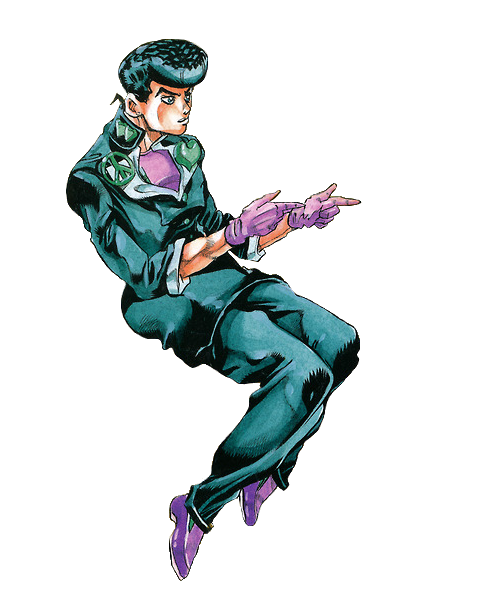

Click + Drag the center image to the left to see more!
Try resizing the page if dragging does not work (Ctrl + scrollwheel)
Scene {{i + 1}}
Add a new scene by clicking the button below!
@if(this.startSceneCreation){
Enter the URL for your desired youtube video below
}@else{ }